Sashwat Anagolum, Reid McMullin, Paul mount, Kien Nguyen
This is a walkthrough of our Easy-ICD program.
1. Here are the search terms:
blueberry cheesecake, pizza, Caesar salad, falafel and hummus
2. Here is the scraping output:
| Blueberry Cheesecake | Caesar Salad | Pizza | Falafel and Hummus |
|---|---|---|---|
| 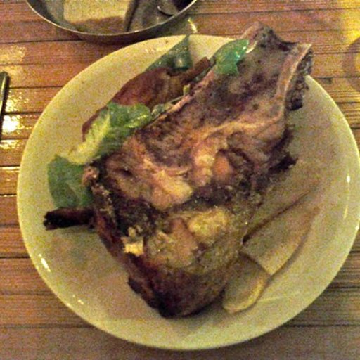 | 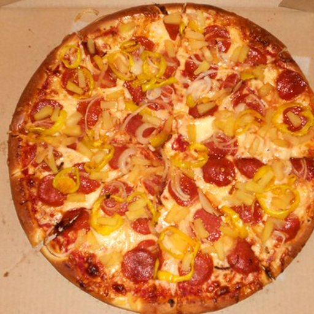 | 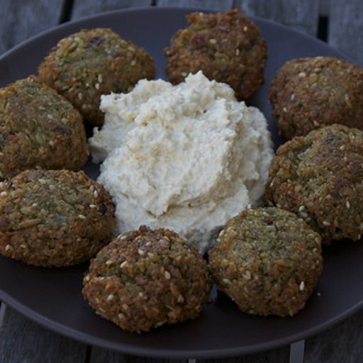 | |
| 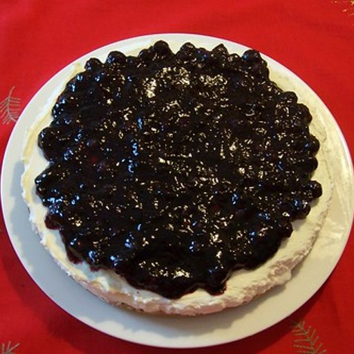 | 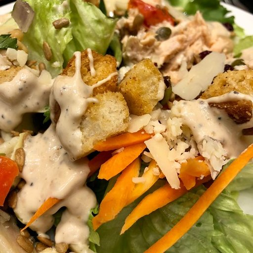 | 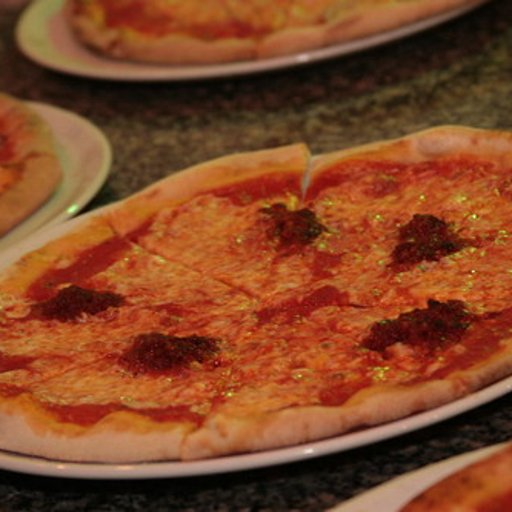 | 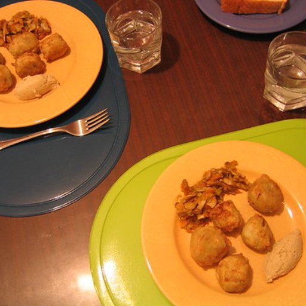 |
| 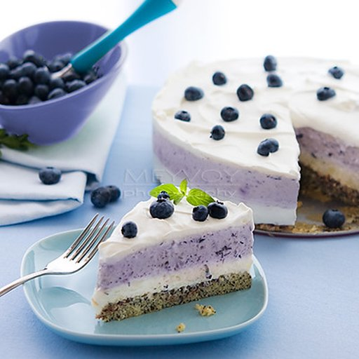 | 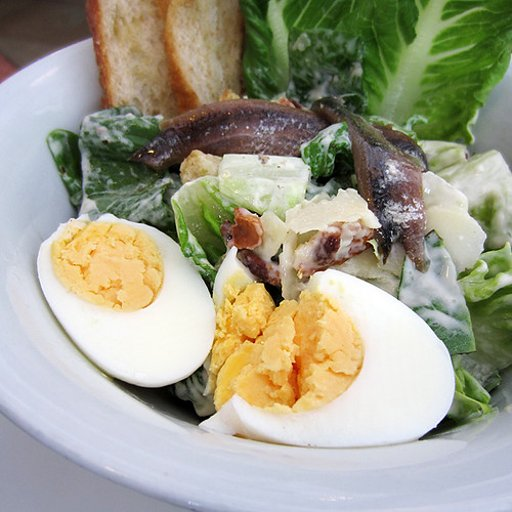 | 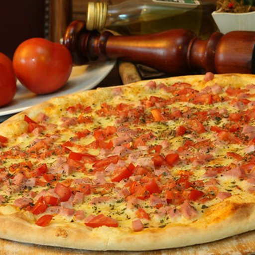 | 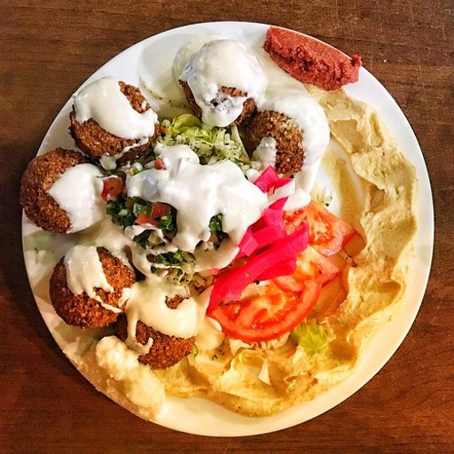 |
3. An initial dataset is then created.
4. Examples of augmented images:
| Pizza Original | Pizza Augmented | Caesar Salad Original | Caesar Salad Augmented | ||
|---|---|---|---|---|---|
| → | 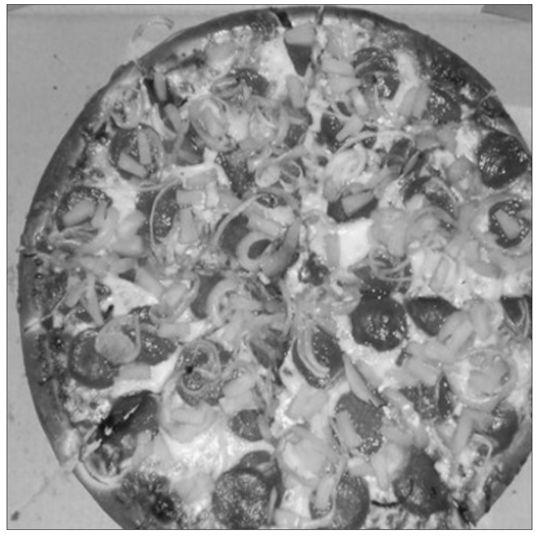 | → | 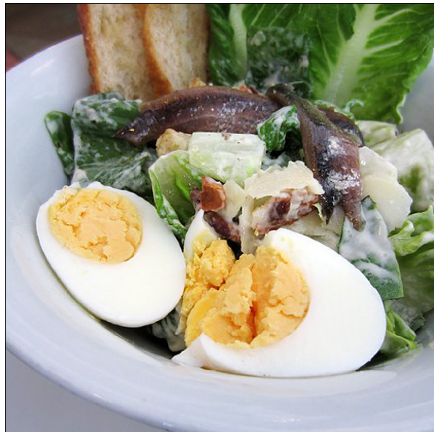 | ||
| → | 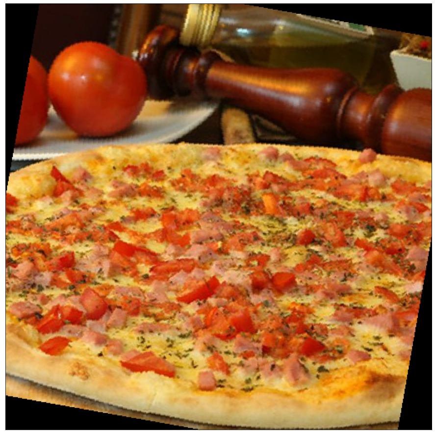 | → | 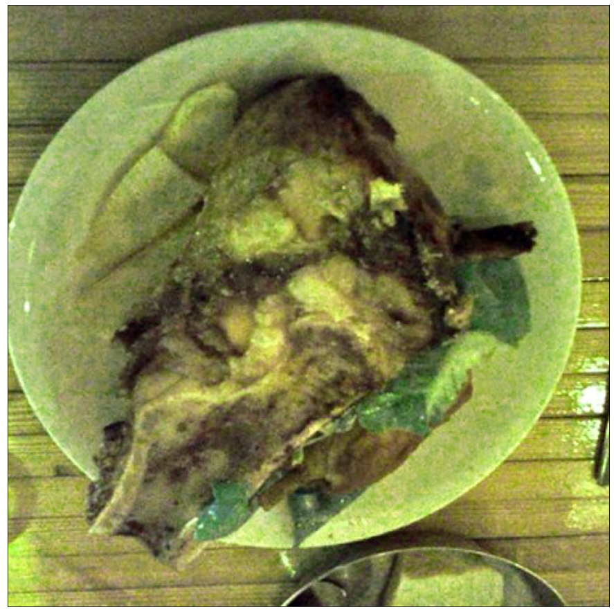 |
5. Then the dataset is cleaned through the elimination of the outlier data.
6. A final list of curated images will be generated.